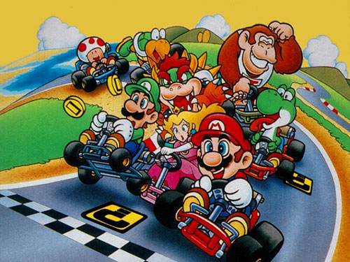
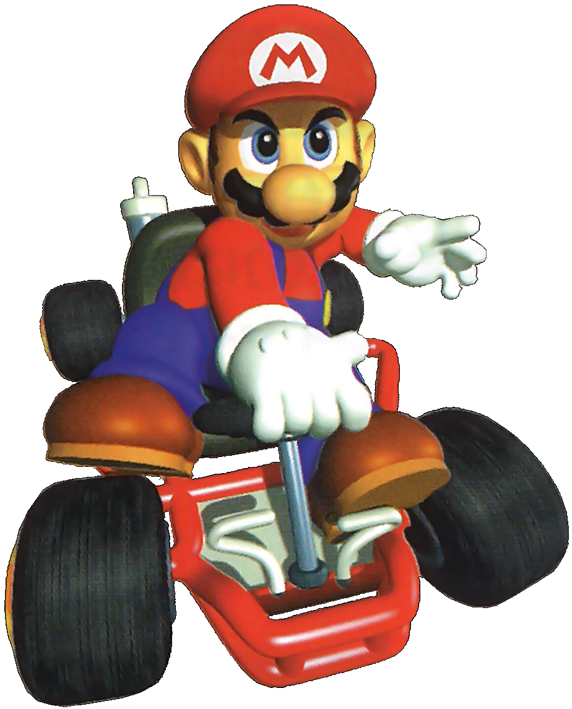
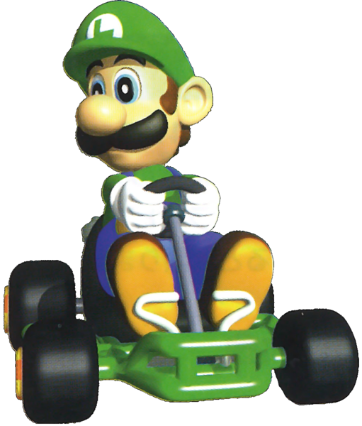
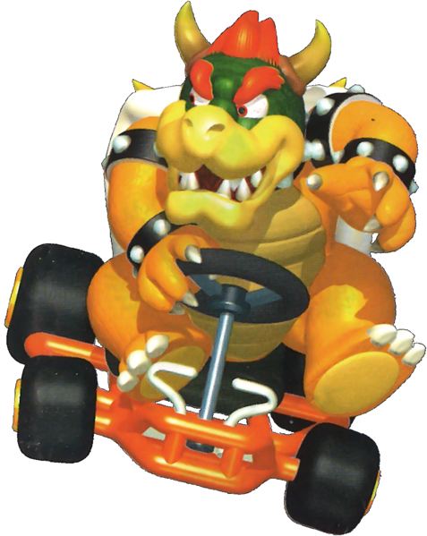
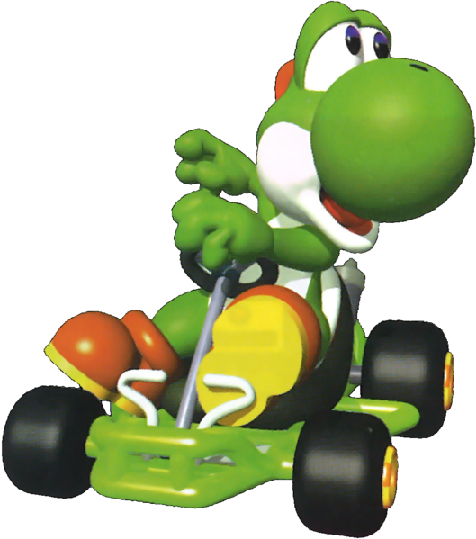
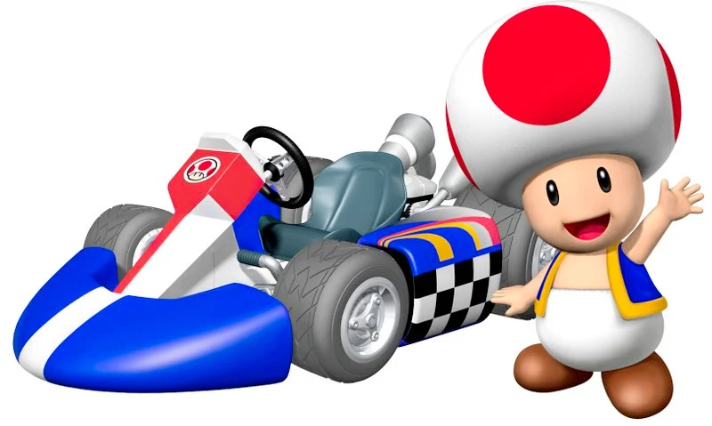
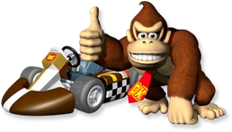

Carros 64

Kart Mario 64 GT
Descrição: Este kart esportivo vermelho apresenta um design aerodinâmico, com linhas suaves e uma carroceria de fibra de carbono.
Seu motor V8 oferece um desempenho incrível, enquanto os pneus de alta aderência proporcionam excelente estabilidade nas curvas.
Valor: $45.000 Ano de Fabricação: 1996

Kart Luigi Turbo Racer
O Kart Luigi Turbo Racer é um modelo verde com uma estampa xadrez elegante.
Possui um motor turboalimentado de 16 válvulas que oferece uma aceleração impressionante.
Seus bancos esportivos e volante com design ergonômico proporcionam conforto durante toda a corrida.
Valor: $42.000 Ano de Fabricação: 1996

Kart Bowser Dragster
O Kart Bowser Dragster é um monstro de potência com uma carroceria robusta e intimidante.
Seu motor V12 de alta potência o torna um adversário temível nas corridas.
Possui uma gaiola de segurança reforçada e pneus resistentes para enfrentar qualquer desafio.
Valor: $55.000 Ano de Fabricação: 1996

Kart Yoshi Speedster
O Kart Yoshi Speedster é um veículo compacto e ágil, perfeito para os amantes da velocidade.
Sua carroceria verde vibrante é decorada com adesivos característicos do Yoshi, incluindo ovos e estrelas.
Com um motor de quatro cilindros turboalimentado, este kart oferece aceleração rápida e manuseio preciso.
Valor: $38.000 Ano de Fabricação: 1996
Carros Wii

Toad's Speedy Mushroom
O kart de Toad é compacto e ágil, apresentando uma carroceria vermelha e branca com detalhes de cogumelos.
Seu motor de quatro cilindros turboalimentado oferece uma aceleração rápida, tornando-o perfeito para corridas em pistas sinuosas.
O Toad's Speedy Mushroom 2008 é conhecido por sua dirigibilidade excepcional.
Valor: $42.000 Ano de Fabricação: 2008

Donkey Kong's Banana Thunder
Descrição: O kart de Donkey Kong é um veículo robusto e imponente, com uma carroceria marrom e amarela adornada com bananas.
Possui um motor V8 de alta potência que proporciona uma incrível força de tração.
O Donkey Kong's Banana Thunder 2008 é perfeito para enfrentar terrenos acidentados nas pistas.
Valor: $58.000 Ano de Fabricação: 2008